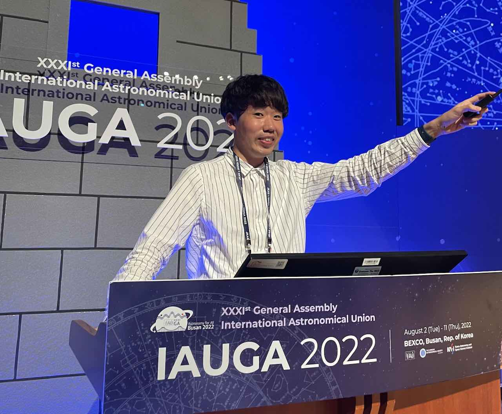
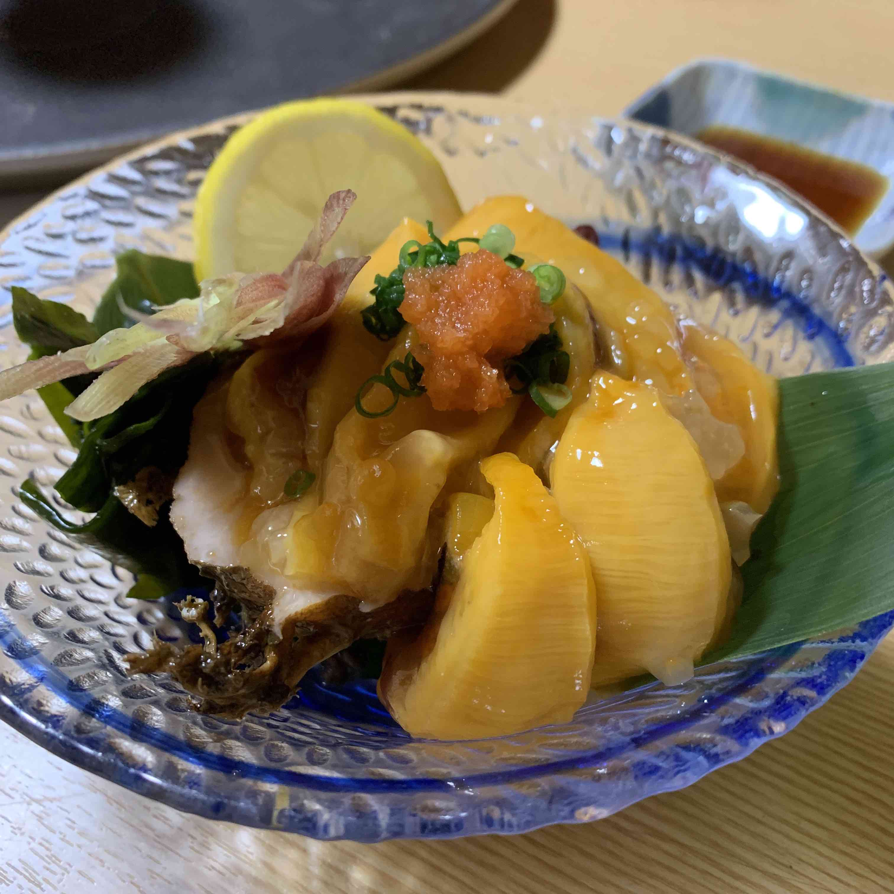

Welcome to a website of Dr. Jin BENIYAMA

JB at International Astronomical Union General Assembly 2022 in Busan
Hello / Bonjour / こんにちは
I am Jin Beniyama, a postdoc at Observatoire de la Côte d’Azur (OCA).
I have mainly engaged in observations of near-Earth asteroids using Japanese telescope,
and I am now studying the thermal properties of asteroids via ThermoPhysical Modeling (TPM).
Please feel free to contact me (mail:jbeniyama[at]oca.eu) if you are interested in my studies!
Education
Doctor in Astronomy
Master in Astronomy(pdf, japanese, 75MB)
Bachelor in Astronomy and Geophysics
Miscellaneous
Favorites

ホヤ in Miyagi prefecture (= sea squirt = sea pineapple)
Hoya in Busan (= sea squirt = sea pineapple = 멍게)
NEWS (only Japanese)
2025
2025.9.7-12
2025.04.19
はやぶさ2 目標、かなり小さい 小惑星1998KY26 望遠鏡に写らず「推定17メートル以下」
というタイトルで
論文の成果を取り上げていただきました。素敵な記事を書いていただきありがとうございました。
2025.04.18
はやぶさ2の最終目的地、想定より小さかった 観測で見えず判明
というタイトルで
論文の成果を取り上げていただきました。ありがとうございました。
2025.4.16
論文
として出版されました。本研究を支えてくださった全ての方に感謝いたします。
2025.02.27,28
2024年度プラネタリーディフェンス・シンポジウム (第16回スペースガード研究会) に参加しました。
Telescopic Observations of Near-Earth Asteroids During Close Approaches:
Contributions to Planetary Defense
という題目で口頭発表(招待講演)を行いました。
2025.2.23–2.26 2025.2.1 2025.2.1
EXCELLENCE FELLOWSHIPS FOR YOUNG RESEARCHERS (若手研究者卓越フェローシップ)
としてコートダジュール天文台でのポスドク生活をリスタートしました。
2025.1.20-1.24 2025.1.10–1.11 2025.1.7–1.8 2025.1.4–1.5 2024
2024.12.9-12.10 2024.11.24 2024.11.9-11.11
EU-ESA Workshop on Size Determination of Potentially Hazardous Near-Earth Objects
(in Darmstadt, Germany) に参加しました。
チリに建設中の望遠鏡を用いた地球接近小惑星の観測計画について発表しました。
2024.10.23-10.24 2024.9.8-9.13 2024.6.5-6.6 2024.5.17 2024.5.4
月刊コートダジュール
というタイトルでコートダジュール天文台の滞在記の連載が始まりました。
2024.4.1 2024.3.7-3.8 2024.02.21
「チャンスは4時間、はやぶさ2目的地の詳細観測へ 27歳天文学者」
というタイトルで
現在準備を進めている小惑星観測の話を書いていただきました。ありがとうございました。
2024.02.20-22
第25回 惑星圏研究会 (Symposium on Planetary Sciences 2024)
に参加しました。 2024.2.13-2.14 2024.01.11 2023
2023.12.11 せいめい望遠鏡(岡山)の共同利用観測提案が採択 されました。2023.12.07 すばる望遠鏡(ハワイ)の共同利用観測提案が採択 されました。2023.10.11-13 日本惑星科学会2023年秋季講演会(広島) に参加しました。2023.10.02–06 2023.09.12,13
2023年度せいめいユーザーズミーティング (京都大学)
に参加します。2023.08.28,29,30
ISAS Planetary Exploration Workshop 2023 (X-NIHONBASHI TOWER)
に参加しました。2023.08.17 2023.07.24–28 2023.07.14 2023.06.18-23
国際会議 The Asteroids, Comets, Meteors Conference 2023 (Flagstaff, Arizona)
に参加しました。
2022年12月に国内で行った地球接近小惑星の観測キャンペーンについての口頭講演
を行いました。
本渡航は日本天文学会第121回早川基金の支援のもと行われました。この場を借りて感謝申し上げます。
2023.05.22–06.07 2023.04.12 2023.04.06 2023.03.02,03
The 3rd DESTINY+ Science Working Team (SWT) Meeting (オンライン)
に参加しました。
Beniyama et al., 2023
)について発表しました。
2023.2.28-3.1
第13回光・赤外線大学間連携ワークショップ (名古屋+オンライン)
に参加しました。 2023.1.31-2.2 2023.1.30
D+JC
に参加しました。
2023.1.12-24 2022
2022.12.20-27 2022.12.16-12.18
連星系・変光星研究会2022(岡山理科大学)
に参加します。2022.12.10
「長野県は宇宙県」第7回ミーティング(木曽文化公園 文化ホール)
に参加しました。2022.11.28-12.02
Chile-Japan Academic Forum 2022 (Los Lagos, Chile)
に参加しました。2022.11.13
Shape Modeling From Lightcurves (smfl)
を公開しました。如何なるフィードバックも歓迎いたします。
2022.11.01-04 2022.10.24 仮符号2022 UQ7が付与
されました。
2022.10.23 仮符号2022 UQ6が付与
されました。
2022.09.20-22 日本惑星科学会2022年秋季講演会(水戸) にオンライン参加しました。 2022.09.13-15 2022.08.08
毎日新聞の連載コラム見上げてごらん(永山悦子論説委員)
にて「深夜の眠気が飛ぶ研究」というタイトルで
木曽Tomo-e Gozenを用いた小惑星観測の話を書いていただきました。ありがとうございました。
2022.08.01-11
XXXIst International Astronomical Union General Assembly (Busan, Korea)
に参加しました。Focus Meeting 8 にて木曽Tomo-e Gozenを用いた地球接近小惑星の
光度曲線観測についての観測成果をまとめた口頭発表(招待講演)を行いました。
多くの方々と議論でき、非常に有意義な時間を過ごすことができました。
本渡航は日本天文学会第118回早川基金の支援のもと行われました。
ありがとうございました。
2022.07.29
Handling prOpertY of Asteroid (hoya)
を公開しました。
2022.07.26-27
2022年度せいめいユーザーズミーティング
に参加しました。 せいめい望遠鏡と3色同時CMOSカメラTriCCSを用いてこれまで、そしてこれから行う微小小惑星の観測についての口頭発表(招待講演)を行いました。
2022.07.13 2022.07.05-06
木曽シュミットシンポジウム2022 (長野県)
に参加しました。木曽Tomo-e Gozenと岡山TriCCSを用いた小惑星の動画モニタリング観測についての口頭講演を行いました。
2022.06.04 仮符号2022 LJが付与
されました。
2022.05.29 仮符号2022 KK5が付与
されました。
2022.05.22-05.27 日本地球惑星科学連合2022年大会(幕張+オンライン) に部分参加しました。
2022.05.09-11 2022.05.04 仮符号2022 JKが付与
されました。
2022.04.19 仮符号2022 HCが付与
されました。
2022.03.07-11
The 53rd Lunar and Planetary Science Conference (Houston, Texas)
に参加しました。The Dwornik Award にエントリーし、木曽Tomo-e Gozenを用いた地球接近小惑星の
光度曲線観測についてのポスター発表を行いました。
本渡航は
日本天文学会第116回早川基金の支援
のもと行われました。ありがとうございました。
2022.03.04 仮符号2022 EZ 、
TMG0067に
仮符号2022 ETが付与
されました。
2022.02.24,25
The 2nd DESTINY+ Science Working Team (SWT) Meeting (オンライン)
に参加しました。せいめい望遠鏡を用いて行った地球接近小惑星(3200) Phaethon の観測結果について発表しました。
2022.02.21,22
国際研究会 PERC Int'l Symposium on Dust & Parent Bodies 2022 (IDP2022, オンライン)
に参加しました。 2022.02.14,15
2021年度プラネタリーディフェンス・シンポジウム (オンライン) に参加しました。木曽Tomo-e Gozenを用いた小惑星探査とサイエンスについて発表しました。
2022.02.08-10
第23回 惑星圏研究会 (Symposium on Planetary Sciences 2022, オンライン)
に参加しました。「創造×小天体」のカテゴリにて、地球接近小惑星とメインベルト小惑星に関する招待講演を行いました。
2022.01.15 2022.01.11-14 2022.01.07 仮符号2022 AR2が付与
されました。
2022.01.06 仮符号2022 AB1が付与
されました。
2022.01.06
NHK コズミック フロント「宇宙をひらく 究極の「時間」に迫れ！」
に友情出演しました。
2021
2021.12.09,10,13
第10回 可視赤外線観測装置技術ワークショップ 2021
に参加しました。Tomo-e Gozenサーベイ観測データから小惑星を発見のための機械学習を用いたシステム開発に
関する口頭講演を行いました。
2021.11.30-12.2 2021.11.24-26
第12回光・赤外線大学間連携ワークショップ (オンライン)
に参加しました。光・赤外線大学間連携望遠鏡を用いた地球接近小惑星の多色同時観測についての口頭講演を行いました。
2021.11.11-12
太陽系天体若手研究会（SSBW2021, オンライン）
に参加しました。国内望遠鏡を用いた地球接近小惑星の多色同時観測についての口頭講演を行いました。
多くの方々と議論でき充実した二日間となりました。
2021.11.09
仮符号2021 VV3が付与
されました。
2021.11.08
仮符号2021 UF12が付与
されました。
2021.11.04-05 2021.10.27
仮符号2021 UB2が付与
されました。
2021.10.04-06
木曽シュミットシンポジウム2021
に参加しました。Tomo-e Gozenを用いた地球接近小惑星の探索と光度曲線観測についての口頭講演を行いました。
2021.09.16-18 日本惑星科学会2021年秋季講演会 に参加しました。 最優秀発表賞にエントリーし、木曽Tomo-e Gozenを用いた地球接近小惑星の高速撮像観測についての口頭講演を行いました。
最優秀発表賞(JSPS Best Presentation Award) を受賞しました。共同研究者の皆様、木曽の皆様、副賞の原資となる寄付をしていただいた匿名の惑星科学会会員様、ならびに審査に関わってくださった全ての方々に感謝しております。ありがとうございました。
2021.09.13-15 2021.08.11-12 2021.08.11-12
2021年度せいめいユーザーズミーティング
に参加しました。 今年2月、3月にせいめい望遠鏡と3色同時CMOSカメラTriCCSを用いて実施した微小小惑星の観測結果についての口頭発表を行いました。
2021.07.31
Moving Object Photometry (movphot) on PyPI
を公開しました。
2021.07.31
TriCCS Data Reduction (TDR) on PyPI
を公開しました。
2021.07.12 2021.07.12 2021.05.30-06.6 日本地球惑星科学連合2021年大会(オンライン)
に参加しました。木曽Tomo-e Gozenを用いた微小地球接近小惑星の動画観測についての口頭講演を行いました。
2021.05.30-06.4 2021.05.13 2021.04.19-23 2021.02.22-24 2020
2020.11.12-14 日本惑星科学会2020年秋季講演会 に参加しました。 木曽Tomo-e Gozenを用いた地球接近小惑星検出システムについての口頭講演を行いました。
2020.11.10-12 第11回光・赤外線大学間連携ワークショップ (オンライン) に参加しました。光・赤外線大学間連携望遠鏡を用いた地球接近小惑星の多色同時観測についての口頭講演を行いました。
2020.06.15-17 2019
2019.12.2-3 第10回光・赤外線大学間連携ワークショップ (岡山県倉敷市) に参加しました。